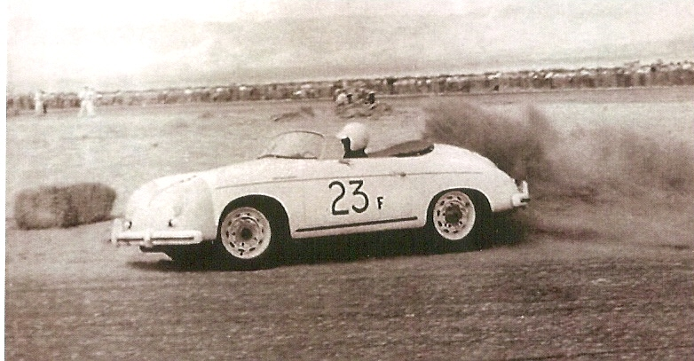
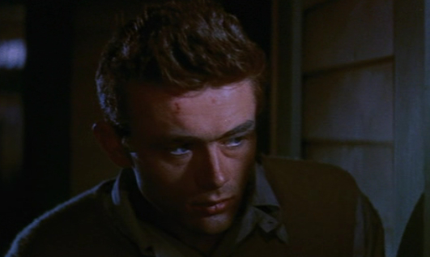
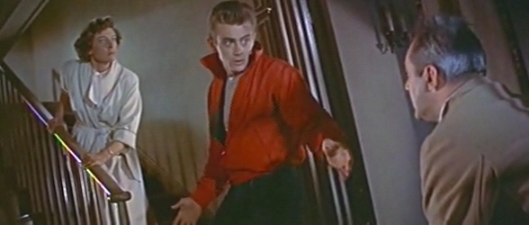
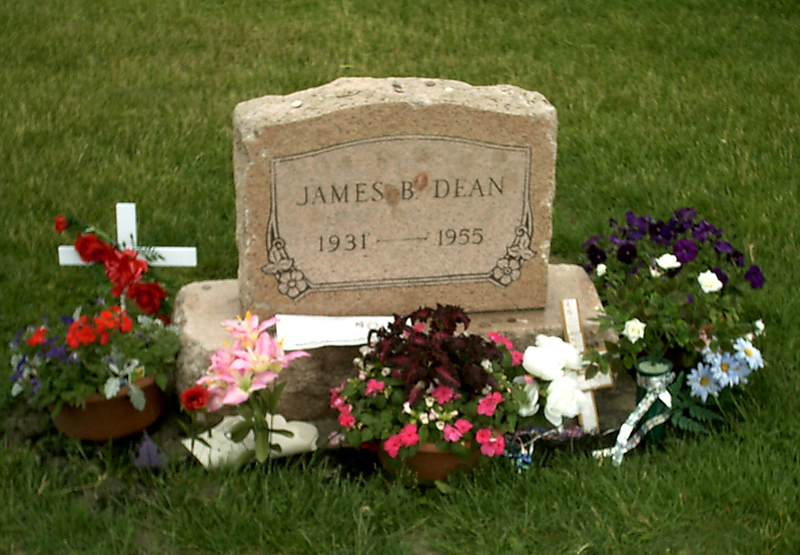
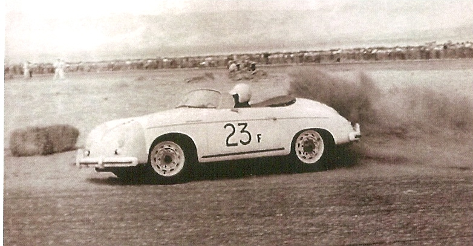
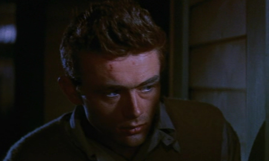
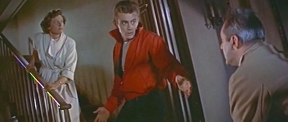
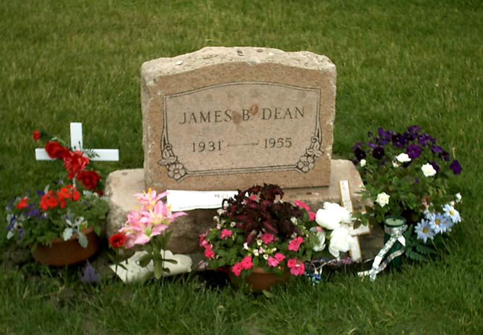

James Dean Story
| Nom de naissance | James Byron Dean |
|---|---|
| Surnom | Jimmy Dean |
| Naissance | 8 février 1931
Marion, Indiana, États-Unis |
| Nationalité | Américain |
| Décès | 30 septembre 1955 (à 24 ans)
Cholame, Californie, États-Unis |
| Profession | Acteur |
| Films notables | À l'est d'Eden (1955)
La Fureur de vivre (1955) Géant (1956) |
| Site internet | http://www.jamesdean.com |
James Byron Dean, né le 8 février 1931 à Marion (Indiana) et mort le 30 septembre 1955 à Cholame (Californie), est un acteur américain. Son interprétation d'un adolescent rebelle et fragile dans le film La Fureur de vivre a fait de lui, pour toute une génération, le symbole d'une jeunesse en désarroi. Son décès tragique et prématuré, aux prémices de sa gloire, participe au mythe et à son inscription au panthéon du cinéma américain. Fait unique, il est nommé deux fois à l'Oscar du meilleur acteur à titre posthume. Il compte aussi parmi les rares acteurs (cinq au total) à avoir été nommés dans cette catégorie pour son premier rôle.
Biographie
Enfance
Fils unique de Winton Dean (17 janvier 1907 – 21 février 1995) et de Mildred Wilson Dean (15 septembre 1910 - 14 juillet 1940) d'origine indienne par sa grand-mère maternelle, James Dean naît à Marion (Indiana) le 8 février 1931. Sa naissance, six mois après le mariage de ses parents, est mal perçue dans cette petite ville de l'Indiana. Il se sent très proche de sa mère aimante, mais reste incompris par son père, froid et distant. Six ans après l'abandon du travail de la ferme par son père pour devenir technicien dentaire dans un laboratoire, sa famille part s’installer à Santa Monica en Californie. James Dean entre alors à la public school du quartier de Brentwood à Los Angeles. Il y reste jusqu’à la mort de sa mère le 14 juillet 1940 d'un cancer du col utérin. Il a 9 ans et, bien que son père l'ait préparé à cette disparition prématurée, elle le laisse dans un profond désarroi.
Elisabeth Taylor relate que James Dean lui aurait confié avoir été abusé dans sa jeunesse par son pasteur.
Incapable d'élever son fils car il s'est endetté pour pouvoir traiter au radium Mildred, Winton Dean l'envoie vivre chez son oncle et sa tante, Marcus et Ortense Winslow dans l’Indiana à Fairmount. James y reçoit une éducation quaker. Au lycée, il s’initie au théâtre et pratique le basket-ball, sa taille de 1,73 m (selon IMDB) ne l'empêche pas d'être un bon joueur, a contrario de sa myopie qui le handicape et ne lui permet pas de se révéler complètement dans ce sport. Après l'obtention de son diplôme en 1949, à 18 ans, il quitte Fairmount pour Los Angeles, où il rejoint son père qui s'est remarié.
Il entre à l'Université de Santa Monica où il intègre la confrérie des Sigma Nu, puis à l’Université de Californie à Los Angeles. À cette époque il s’investit totalement dans le théâtre malgré l'opposition de son père. James Dean quitte le domicile familial pour vivre dans un appartement avec son amant William Bast. Il vit alors de petits boulots tels que gardien de parking
Carrière
James Dean commence sa carrière d’acteur en tournant dans une publicité pour Pepsi-Cola en 1950. Il quitte l’université pour se consacrer entièrement à sa passion de comédien et s'inscrit comme auditeur puis élève à des cours de comédie à l'Actors Studio de New York4. Il rencontre à cette époque Rogers Brackett, directeur financier d'une agence de publicité et producteur de shows radiophoniques formé aux studios Walt Disney et aux côtés du producteur hollywoodien David O. Selznick. Dean a une liaison avec Brackett qui devient son mentor, le faisant tourner dans plusieurs publicités et lui ouvrant le monde de la télévision et du cinéma5. Il apparaît dans différentes séries de télévision comme : Kraft Television Theater, Studio One, Lux Video Theatre, Danger, Robert Montgomery Presents et General Electric Theater.
Il joue également au théâtre où il connaît un grand succès à Broadway à New York, jouant le rôle du jeune arabe Bachir dans la pièce d’André Gide, L'Immoraliste4, qui lui valut le prix du jeune acteur le plus prometteur de l'année et le propulse dans le monde du cinéma.
Sous contrat à la Warner Bros4, Il tient des petits rôles dans divers films, mais c’est son rôle de Cal Trask dans À l’est d’Eden, pour lequel il est nommé aux Oscars dans la catégorie meilleur acteur (première nomination posthume de l’histoire des Oscars), qui le rend célèbre et révèle tout son talent dramatique. Il enchaîne avec La Fureur de vivre, puis Géant, son dernier film pour lequel il reçoit également une nomination aux Oscars dans la catégorie meilleur acteur.
Mort
Passionné de compétition automobile, James Dean a plusieurs victoires à son actif. Un de ses loisirs favoris est de traverser les rues de Los Angeles à très grande vitesse, semant les voitures de police.
James Dean veut participer à une compétition automobile au Nord de la Californie. Aussi part-il tôt le matin de Los Angeles, au volant d'une Porsche 550 Spyder, avec son mécanicien, Rolf Wutherich. Durant le trajet, il est arrêté par un contrôle de police et reçoit une contravention pour excès de vitesse.
Venant de l'est sur la route 466 (actuelle route 46), James Dean roule déjà depuis presque quatre heures, en direction de Salinas. À un croisement proche de la petite bourgade de Cholame, un étudiant, Donald Turnupseed, qui conduit une Ford Sedan, arrive en face et lui coupe la priorité. James Dean roule alors à 90 km/h6. Deux policiers témoins de la scène ont évoqué le manque de visibilité, le véhicule de James Dean étant très bas. Les deux voitures se percutent de plein fouet, selon les deux policiers présents. Le passager de la voiture, Rolf Wutherich, heurte le tableau de bord avant d'être projeté hors de la voiture. James Dean, lui, est tué sur le coup, tandis que l'étudiant s'en sort avec quelques hématomes. Le décès de l'acteur est annoncé à 17 h 59, le 30 septembre 1955.
James Dean venait de terminer le tournage de Géant, durant lequel, ironiquement, une clause de son contrat lui interdisait les courses automobiles et les conduites dangereuses. Il avait tourné peu de temps avant un clip pour la prévention routière, incitant les gens à rouler prudemment.
Vie privée
Bisexualité
Quoique présenté comme homosexuel ou hétérosexuel, James Dean était vraisemblablement bisexuel
William Bast, son colocataire lorsqu'il était étudiant, est connu pour avoir été son amant à cette époque et quelques années plus tard.
Parmi les relations hétérosexuelles de James Dean, mises en avant par les studios d'Hollywood, on peut citer la danseuse Liz Sheridan, avec qui il a vécu à New York. Leur relation dure un peu plus d’un an. Celle-ci affirmera plus tard, dans sa biographie, que James Dean avait eu une relation avec le producteur Rogers Brackett. Il sort ensuite avec Geraldine Page, sa partenaire dans L'Immoraliste. Cette relation dure seulement trois mois, car James Dean doit partir pour le tournage de À l’est d’Éden (East of Eden). Il entretient aussi une relation avec l’actrice italienne Pier Angeli, qu'il rencontre sur le tournage de À l'est d'Eden, alors qu'elle tourne avec Paul Newman dans Le Calice d'argent. La mère de Pier Angeli s'oppose à cette relation : James Dean n'est pas croyant et elle ne supporte pas ses mauvaises manières, ce qui cause la rupture ; quelques jours plus tard seulement, on annonce les fiançailles de Pier Angeli avec le chanteur de charme Vic Damone. Il vit également une courte relation avec l'actrice Maila Nurmi, qui sera l'une des premières à révéler la bisexualité de ce dernier aux journalistes, ainsi qu'avec l'actrice Ursula Andress, sa petite amie au moment de sa mort.
Plusieurs films (en particulier The James Dean Story, 1957, James Dean and me, 1995, James Dean: a portrait, 1996) dépeignant la vie de James Dean gomment sa bisexualité. Dans les années 1950 et 1960, toutes les biographies de James Dean font de même, en raison de l'homophobie généralisée aux États-Unis à cette époque.
Héritage et postérité
James Dean est l’un des cinq acteurs à avoir été nommé aux Oscars dans la catégorie du meilleur acteur pour son premier rôle. Il est aussi le seul à avoir été nommé deux fois à titre posthume.
Précurseur du phénomène rock du milieu des années 1950 aux États-Unis, Les films L'équipée sauvage, Graine de violence et La Fureur de vivre furent parmi les premiers à évoquer au cinéma la rébellion des adolescents et à mettre en scène l'avènement d'une Amérique différente. Depuis la sortie de La Fureur de vivre, de nombreux adolescents dans le monde ont idéalisé James Dean, voyant en lui la représentation du mal-être de la jeunesse à l’époque. Son interprétation a surtout révélé son talent et bon nombre d’acteurs affirment qu’ils ont été influencés par Dean. Parmi eux Elvis Presley, qui affirma dans un entretien qu’il « espérait avoir une carrière similaire à celle du jeune acteur ». Certains journaux ont comparé le jeune acteur River Phoenix à James Dean, non seulement pour son talent mais aussi du fait sa mort tragique à l'âge de 24 ans.
James Dean laisse une trace importante, universelle et intemporelle dans le monde du cinéma.
Statut d'icône et impact sur la culture populaire
Quelques années après sa mort, sept mille lettres d'amour au nom de James Dean parvenaient encore quotidiennement au Warner Bros. Studios. Ses fans continuent d'écrire et de téléphoner aux chaînes de télévision pour que ses films soient rediffusés. Plus de cinquante fan-clubs se créent. La pierre tombale, régulièrement fleurie et recouverte de marques de rouges à lèvres, est volée plusieurs fois. Les produits dérivés (photos, bustes, magazines plus ou moins fantaisistesN 1, tee-shirts, etc.) connaissent un grand succès.
En 1990, Michel Berger et Luc Plamondon écrivent la comédie musicale La Légende de Jimmy, inspirée par la vie de James Dean, (la première a lieu le 22 septembre 1990 au théâtre Mogador à Paris).
 






